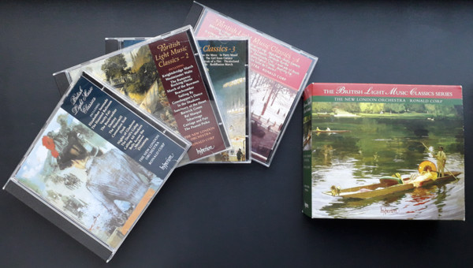

CD
The British Light Music Classics Series
The New London Orchestra, Ronald Corp
Media: — · Sleeve: —
—
Personal
Discogs SuggestedCA$40.39
Discogs MedianCA$40.39
Discogs HighCA$40.39
- Physical Copy ID
- BB-CD-3001
- Year
- 2006
- Label
- Hyperion
- Catalog #
- CDS44261/4
- Country
- GBUK
- Genre / Style
- Classical, Stage & Screen · Romantic